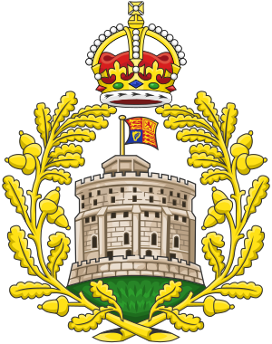
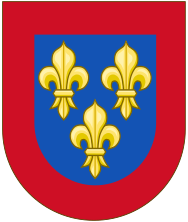
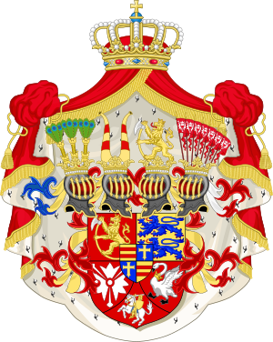

Breve estudio sobre algunas de las casas reinantes en Europa en la actualidad.
Anteriormente denominada Casa de Sajonia-Coburgo y Gotha, es la Casa Real del Reino Unido de Gran Bretaña e Irlanda del Norte. Fue renombrada el 17 de julio de 1917 por el rey Jorge V del Reino Unido en el transcurso de la Primera Guerra Mundial. Dado el origen germánico del anterior nombre y debido a que entonces el Reino Unido estaba en guerra contra Alemania, decidió adoptar el nombre británico de "Windsor" por una proclamación real. La jefatura actual de la Casa de Windsor corresponde a Carlos III, monarca reinante en el Reino Unido y en los otros catorce reinos de la Mancomunidad de Naciones.
| Monarca | Consorte | Fechas |
|---|---|---|
| Eduardo VII | Alejandra de Dinamarca | De 1863; Hasta 1910 |
| Jorge V | María de Teck | De 1893; Hasta 1936 |
| Eduardo VIII | Wallis Simpson | De 1937; Hasta 1972 |
| Jorge VI | Isabel Bowes-Lyon | De 1923; Hasta 1952 |
| Isabel II | Felipe Mountbatten | De 1947; Hasta 2021 |
| Carlos III | Diana Spencer / Camila Shand | De 1981; Hasta 1996 / De 2005 - |
Es una casa real de origen francés (aunque la primera corona a la que accedió fue la del reino de Navarra), actual casa reinante en España. El apellido Bourbon o, en España, Borbón procede de un topónimo: el castillo de Borbón-l'Archambault, situado en el departamento francés de Auvernia (distrito de Moulins), por ser esta la casa matriz de todos los nobles de esa estirpe que, según cuentan los genealogistas, descienden de una rama secundaria de los Capetos, dinastía que gobernó Francia entre los años 987 y 1328.
Para fines de este estudio, únicamente se tomarán en cuenta los monarcas pertenecientes a los periodos de la Segunda y Tercera Restauración (1875 - a la fecha).
| Monarca | Consorte | Fechas |
|---|---|---|
| Alfonso XII | Maria de las Mercedes, princesa de Orleans / Maria Cristina, archiduquesa de Austria | De 1878; Hasta 1878 / De 1879; Hasta 1885 |
| Alfonso XIII | Victoria Eugenia de Battenberg | De 1906; Hasta 1941 |
| Juan Carlos I | Sofía de Grecia | De 1962 - |
| Felipe VI | Letizia Ortiz Rocasolano | De 2004 - |
La Casa de Schleswig-Holstein-Sonderburg-Glucksburg-Beck,llamada también Casa de Glucksburg, por tener su origen en Glucksburg, ciudad del norte de Alemania, es la dinastía reinante en Dinamarca y Noruega, y fue la casa de los reyes de Grecia hasta la abolición de la monarquía en ese país. Su lema es «Ισχύς μου ἡ ἀγάπη τοῦ λαοῦ» (Isjís mu i agápi tu laú, que en español significa «Mi fuerza es el amor del pueblo»).
Para fines de este estudio, únicamente se tomarán en cuenta los monarcas pertenecientes a la Casa Real de Dinamarca.
| Monarca | Consorte | Fechas |
|---|---|---|
| Cristián IX | Luisa de Hesse-Kassel | De 1842; Hasta 1898 |
| Federico VIII | Luisa de Suecia | De 1869; Hasta 1912 |
| Cristián X | Alejandrina de Mecklemburgo | De 1898; Hasta 1947 |
| Federico IX | Ingrid de Suecia | De 1935; Hasta 1972 |
| Margarita II | Enrique de Laborde de Monpezat | De 1967, Hasta 2018 |
| Federico X | Mary Donaldson | De 2004 - |